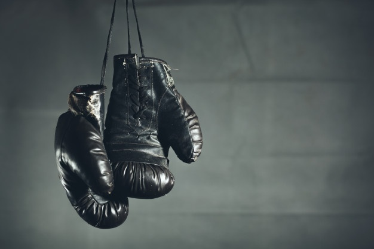
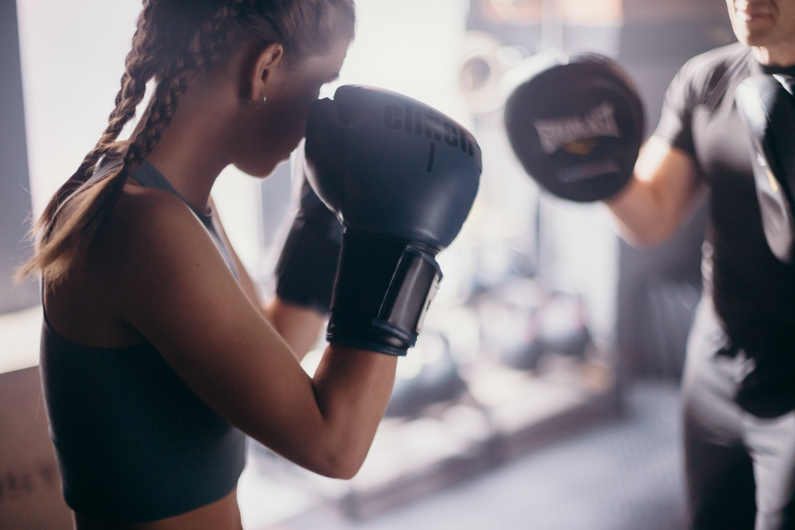

Equipamiento
Guantes

Los Guantes de Boxeo son importantes para todo aquel que quiera realizar un buen desempeño en este deporte.
Las caracteristicas principales que todo buen guante de boxeo que debe tener son las siguientes. Primero esta la Talla del guante ya que esta se elegira en base a su usuario y determinara la proteccion que tenga el mismo.
Segundo que se debe tener en cuenta el material, los materiales empleados para la fabricación pueden agruparse en dos tipos: naturales y sintéticos. Luego esta el uso destinado ya sea para niños, para sparring, para competicion u o entrenamiento.
Y por ultimo y no menos importante el cierre, el cual puede ser con velcro o con cuerda u o cordones.
Vendas

Las vendas de boxeo fabricadas en algodón, pueden ser de las más comercializadas. Normalmente,
son de las más utilizadas. Se utilizan mucho las vendas de algodón por características como la durabilidad,
la resistencia, la adaptación o simplemente que son lavables y las manos transpiran.
Manoplas

Las manoplas de boxeo tienen un diseño y una construcción sencilla,
y esta simplicidad es parte de la razón de su popularidad entre los boxeadores y los combatientes de MMA. Sin embargo, hay características específicas para todas
las manoplas de boxeo y algunas variaciones que pueden diferenciar un par de otros.
Saco de Boxeo

Piensa que para dar un puñetazo (que circula a casi 11 metros por segundo) utilizas casi toda la musculatura del cuerpo, desde el pie de apoyo hasta los nudillos de la mano que impactan con el saco. La coordinación de los grandes grupos musculares es total: el impacto sobre el saco activa toda la musculatura de los hombros y los brazos, la zona del core (pectorales, abdominales y espalda),
está en todo momento en movimiento y los glúteos y piernas están activos haciendo pequeños saltitos sin parar.
Es por este motivo que el boxeo es una actividad muy recomendable si quieres realizar un entrenamiento total.